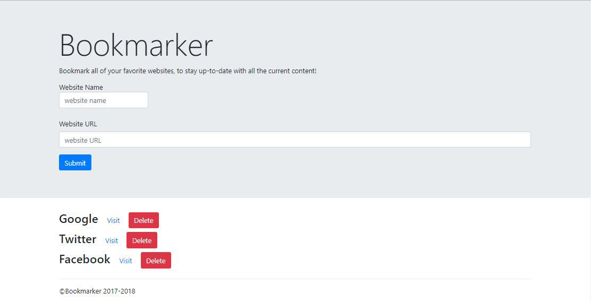
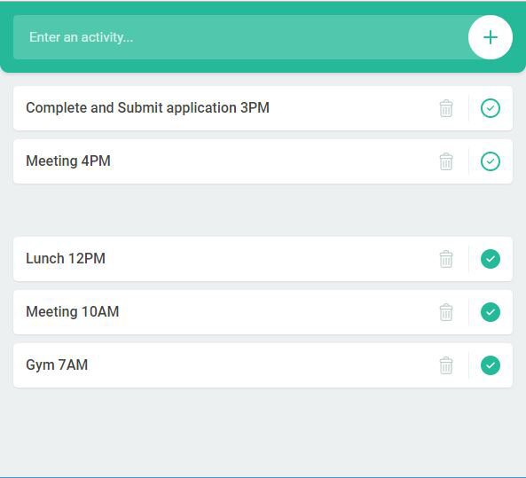

PROJECTS

This website was developed for a rising professional artist to help promote and handle tours,merchandise,and other information that'll go along the journey. Developed purely on HTML,CSS3 and some Javascript.

Using HTML and CSS3 this site was built for a church on a mission to spread the gospel. Focusing on a simple design I chose to mainly focus on functions of the website.

With Grids being the focus, this website is just a basic template for an entrepreneurial visioned format.

This is a simple bookmark web application that saves your desired URLs. Developed purely on HTML,CSS3 and Javascript.

A to do list done using HTML/CSS/and Javascript.